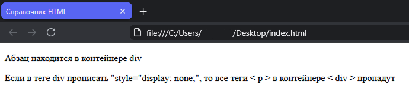
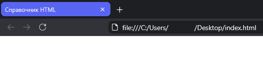
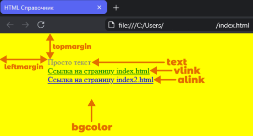

|
|
Путь к странице > Главная > Основы HTML |
|
|
Путь к странице > Главная > Основы HTML |
|
|
Путь к странице > Главная > Основы HTML |
|
Теги: Закрытые и открытые |
Некоторые теги являются контейнерами, содержащими в себе другие теги (например <div></div>, <table></table>), то есть если отключить контейнер, то все теги, содержащиеся в этом контейнере, тоже будут отключены.
Это можно рассмотреть на примере:
|
 |
Контейнер <div> активен |
|
 |
Контейнер <div> отключен |
Такие теги необходимо прописывать следующим образом:
Заметьте!
Закрывающий тег начинается с “/”, это обязательное требование, в противном случае тег у вас не будет работать!
Но!
Это относится не ко всем тегам.
Как правило некоторые редакторы (например Visual Studio Code, Sublime Text, WebStorm) либо сами подсказывают что это за тег, либо автоматически закрывают введенный тег.
|
Структура сайта |
Структура html-документа состоит из трех пар тегов:
Заметьте!
Все теги структуры сайта закрытые и должны писаться в правильной последовательности как показано на примере выше!
|
Содержание тега Head |

|
В этом разделе будут написаны не все теги Head, а лишь основные. Для просмотра всех тегов Head перейдите в раздел “Список Тегов”. |
Одиночный тег <base> служит для указания полного URL-адреса документа. Зачем это нужно? Представьте, что блуждая по интернету, вы сохранили какую-нибудь html-страницу себе на компьютер, с тем, чтобы просмотреть ее позже. Все картинки на этой страницы превратятся в красные крестики. Но если вы не отключены от сети, а на странице присутствует тег <base>, то браузер будет знать, где искать необходимый файл, найдет его и загрузит картинки.
У этого тега один атрибут href, значением которого является адрес страницы.
Пример кода:
Одиночный тег <link> необходим для подключения внешних файлов. Например, если вы будете использовать css или javascript в разработке собственного сайта, то нужно использовать тег <link> чтобы твой сайт использовал стили из внешнего файла css или функции из внешнего файла javascript.
У тега <link> несколько атрибутов:
Пример кода:
Единственным обязательным элементом заголовка документа являются теги <title></title>. Они необходимы, чтобы дать документу название, оно отражается в заголовке окна браузера.
Пример кода:
|
Содержание тега Body |
|
|
Обязательных параметров у тега <body> нет, да и применение необязательных параметров тоже не приветствуется. |
Все, что отображается на web-странице, находится в тегах <body></body> . Это текст, картинки и исполняющиеся скрипты, а также теги для оформления всего этого.
Рассмотрим параметры, которые поддерживаются всеми браузерами:
alink - устанавливает цвет активной ссылки. Текущий цвет ссылки меняется на активный при нажатии на нее.
vlink - устанавливает цвет посещенной ссылки, т.е. той, по которой уже щелкали.
background - указывает на изображение, которое будет использоваться в качестве фонового рисунка. Этот рисунок заполняет собой все видимое пространство окна. Если рисунок меньше окна браузера, то он повторяется, образуя мозаику из одинаковых картинок. На стыке этих картинок возникают видимые переходы. Поэтому к подбору фоновых рисунков следует подходить с большим вниманием.
bgcolor - указывает фоновый цвет документа.
leftmargin - определяет отступ от левого края окна браузера до контента страницы.
rightmargin - определяет отступ от правого края окна браузера до контента страницы.
topmargin - определяет отступ от верхнего края окна браузера до контента страницы.
bottommargin - определяет отступ от нижнего края окна браузера до контента страницы.
text - устанавливает цвет текста для всего документа.

|
Атрибуты тегов |
HTML-атрибут - это специальная характеристика, которая добавляется в открывающий тег для управления его поведением, внешним видом или передачи дополнительной информации браузеру.
Ключевые правила:
Глобальные атрибуты
Это атрибуты, которые можно применять практически к любому HTML-тегу.
⠀⠀• class - задаёт имя класса для стилизации через CSS.
⠀⠀• id - устанавливает уникальный идентификатор для элемента.
⠀⠀• style - позволяет добавлять стили. Например, выравнивание текста.
⠀⠀• title - выводит вслывающую подсказку при наведении курсора на элемент.
Специфические атрибуты
Это атрибуты, которые используются только в определённых тегах и обеспечивают их базовую работу.
⠀⠀• href (для тега a) - задаёт URL-адрес ссылки.
⠀⠀• src (для тега img) - указывает путь к изображению.
⠀⠀• alt (для тега img) - задаёт альтернативный текст, если картинка не загрузилась.
⠀⠀• target (для тега a) - указывает, как открывать ссылку. Наример, в новой вкладке.
2026 г.
Авторы проекта:
Студенты гр.ИСИП 25-1 Янковский Иван и Цветкова Эрика
Связь с нами:
frogilenorezerv@gmail.com
eream.jc@gmail.com